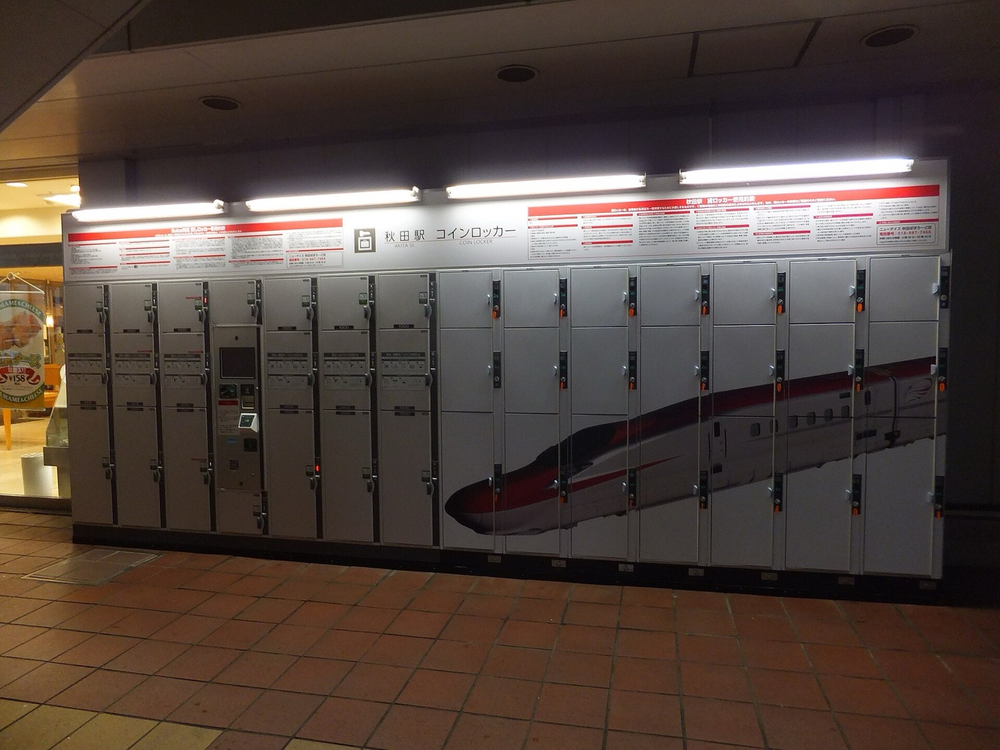

Most bad trips are not bad luck. They are a booking made three weeks too late, an afternoon nobody thought about until it arrived, and a museum that turned out to be closed on Mondays. My partner and I have traveled enough now that planning has stopped being a chore and turned into its own part of the trip, the part that happens on the couch weeks ahead with a laptop each. This is the actual system we use, start to finish.
Note: this post may contain affiliate links and ads. If you use them I may earn a small commission at no cost to you, see my disclosure. The tools and services I mention are the ones we genuinely use.
Start With the Shape, Not the Details
Before anything gets booked, we agree on what kind of trip this is. Are we moving between three cities or sitting in one? Is this a walk-fifteen-miles-a-day trip or a sit-by-water trip? Are we optimizing for food, for landscape, for a specific thing we have both wanted to see for years?
This sounds soft, but it decides everything downstream. A two-city trip means train tickets, two hotels, and a travel day that eats an afternoon. A one-base trip means you can unpack once and take day trips. Getting this wrong is how people end up spending a third of a vacation in transit and wondering why they came home tired.
Book Early. Seriously, Book Early.
This is the single highest-leverage thing in the whole process and it is the one people skip. Flights, stays, and anything with limited capacity all get worse the longer you wait. Not sometimes. Reliably.
For flights, the useful window is roughly one to three months ahead domestically and two to six months internationally. I wrote the full version of that in my cheap flights playbook, but the short version is that waiting almost never pays.
For stays, we search Expedia and Booking.com first because the inventory is broad and the filters are good, then we decide between a hotel and an Airbnb based on the shape of the trip we already agreed on. Short city stay, we take the hotel every time, because a front desk that holds your bags before check-in and after check-out is worth more than people realize. Longer stay, a group splitting the cost, or anywhere a kitchen and a washing machine would change how we live that week, we take the Airbnb.
The tours and the tickets go early too. The Haleakala sunrise reservation, the timed entry to the famous museum, the one restaurant you actually care about. These are the things that sell out, and they are also the things you will be most annoyed about missing.
Put Every Dollar on the Right Card
Everything we book goes on a travel rewards credit card. The flights, the hotels, the rental car, the restaurant bookings, all of it. This is free money that most people leave sitting on the table by paying with a debit card out of habit.
The math is not complicated. A trip that costs a few thousand dollars, put on a card earning multiple points per dollar on travel, generates a meaningful chunk of the next trip. Stack that with a welcome bonus timed to a big booking and you can genuinely cover a flight. The only rule that matters is that you pay the balance in full, because interest wipes out any rewards instantly and then some.
I broke down the card I use for exactly this in Capital One Venture X: Is the $395 Fee Worth It?, including the honest case for when the annual fee is not worth it. If you want the no-fee version of the same idea, I also reviewed the standard Venture card.
Do the Research Before You Land
This is the part my partner and I actually enjoy, and it is where a trip goes from fine to memorable. Weeks out, we both start collecting. Things to see, neighborhoods to walk, a viewpoint somebody mentioned, a bakery from a video, the museum that everybody says is worth it and the one that everybody says is not.
The goal is not to build a schedule yet. The goal is to build a pile. You want more candidates than you can possibly do, because the pile is what saves you later when it rains, when something is closed, or when you finish a thing early and have three unexpected hours.
Research beats improvisation. The pile you build at home is what rescues an afternoon abroad.
While you are researching, note the boring logistics next to each thing: the opening hours, the closed day, whether it needs a timed ticket, and roughly how long people say it takes. Half of all trip disappointment is a place being closed on the one day you had free.
Build the Agenda Together in Trello
Once the pile is big enough, it becomes an agenda. We use Trello for this, and after trying documents and shared notes and a dozen dedicated travel apps, it is the thing that stuck.
The setup is deliberately simple. One list per day of the trip, plus a list called Maybe that holds everything that did not make the cut. One card per thing we want to do. Each card carries the address, the hours, the ticket link if it needs one, and a note on how long it takes.
Two things make this work better than a document. The first is that it is shared, so we are both building it, and neither of us is the designated trip planner carrying the whole thing. The second is that cards drag. When the plan changes, and it will, moving a card from Tuesday to Thursday takes two seconds instead of rewriting a paragraph.
We aim for roughly two anchors a day and leave the rest open. Two solid things you actually want to do, with space between them, beats six things you sprint between and remember none of.
Plan for the Plan Falling Apart
Here is the part experience teaches you. Nothing is ever exactly correct. The train is late, the weather turns, jet lag flattens you on day two, or you like a neighborhood so much you stay three hours instead of one.
So we plan for the deviation instead of pretending it will not happen. The Maybe list exists for exactly this. Every day has an indoor option in case of rain. We never book a tour for the first morning after a long-haul flight. And we deliberately leave one day almost empty, usually near the end, because by then you know what you actually want more of.
The agenda is not a contract. It is a well-researched menu, so that when the plan breaks you are choosing between good options instead of standing on a corner googling.
The Little Things You Learn by Doing It
These are the details nobody tells you and everybody figures out eventually. Getting them early makes travel dramatically less annoying.

Coin lockers at a station in Japan. Learning that these exist changes how you use a travel day.
- Luggage lockers exist and they are everywhere. Most major train stations have coin lockers, and most cities have bag storage services near the center. This turns a dead travel day into a real one. Check out of the hotel, stash the bags, get another six hours in the city before the evening train.
- Hotels will hold your bags for free. Before check-in and after check-out, and you do not have to ask sheepishly. It is a normal service.
- Sort your data before you land. A travel eSIM set up at home means you walk off the plane with maps and messages already working, instead of hunting wifi in an arrivals hall.
- Screenshot everything important. Boarding passes, reservation numbers, the address of the first night's stay in the local language. Phones die and airport wifi fails at the worst moments.
- Know the closed day. Museums and restaurants across much of Europe and Asia close one weekday. Build around it rather than discovering it.
- Carry a little cash. Even in card-heavy countries, the small food stall, the locker, and the rural bus often want coins.
- Book the first night properly. Wherever else you economize, arriving tired to a place that is easy to find and near transit is worth paying for.
Our Actual Checklist
Compressed into the order we do it:
- Agree on the shape of the trip before booking anything.
- Book flights early, in the real booking window.
- Book stays early, choosing hotel or Airbnb by trip shape.
- Put it all on the rewards card and pay it in full.
- Lock the timed tickets and anything with limited capacity.
- Build the pile of everything you both want to see.
- Turn it into a Trello board, one list per day, two anchors a day.
- Leave a Maybe list, an indoor option, and one open day.
- Sort the small stuff, eSIM, screenshots, some cash.
Frequently Asked Questions
How far in advance should I plan a trip?
Start loose planning as soon as you have dates, and book the big pieces early. Flights land in their best window roughly one to three months out domestically and two to six months out internationally, and the good stays and limited-capacity tours go first. The research and the agenda can keep evolving until you leave. The bookings should not.
What is the best way to organize a travel itinerary?
Use something shared and rearrangeable rather than a document. We use Trello, one list per day and one card per thing, with the address, hours, ticket link, and rough duration on each card. Because cards drag between days, a change of plan is a ten second fix instead of a rewrite.
Should I book a hotel or an Airbnb?
It depends on the trip. Hotels win on short city stays where a front desk, daily cleaning, bag storage, and a central location matter. Airbnb wins on longer stays, group trips splitting the cost, and anywhere a kitchen and a washing machine would genuinely change how you live that week.
Should I plan every hour of a trip?
No. Mark everything you want to see, then accept you will not see all of it. Two anchors a day with space between them is the sweet spot. The agenda exists so that when things change you are choosing between good options, not scrambling.
Plan ahead, make the agenda, mark everything you want to see, and book early. Do that much and the trip mostly takes care of itself, which is the entire point. The planning is not there to control the trip. It is there to buy you the freedom to enjoy it when it inevitably goes its own way.
Image credits: notebook and map still life (CC0, via Rawpixel); Akita Station coin lockers by Kikucha (CC BY-SA 3.0); museum information desk by Pedro Ribeiro Simoes (CC BY 2.0). Cropped and resized from the originals.